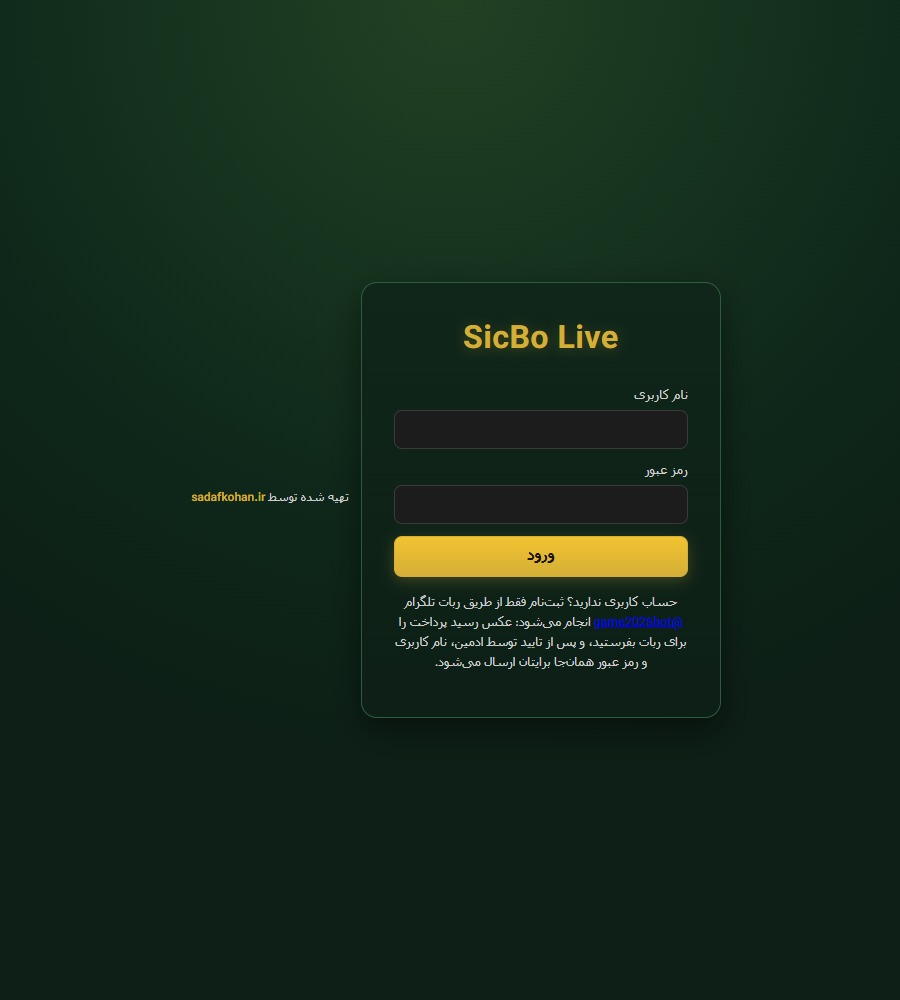
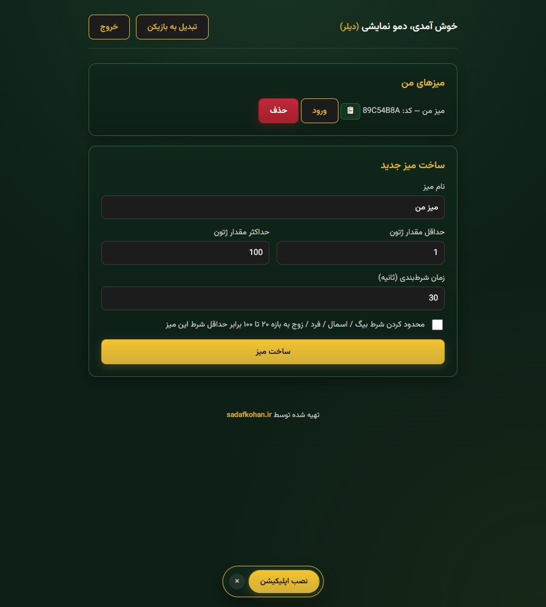
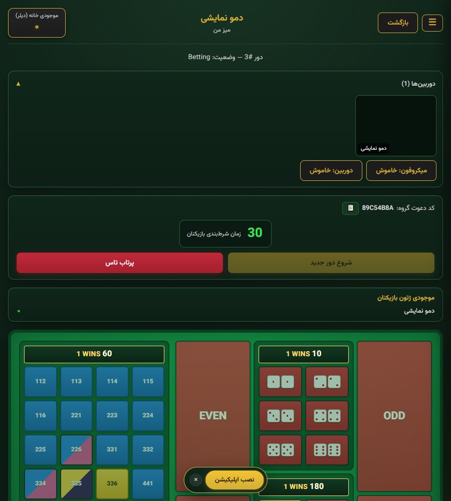
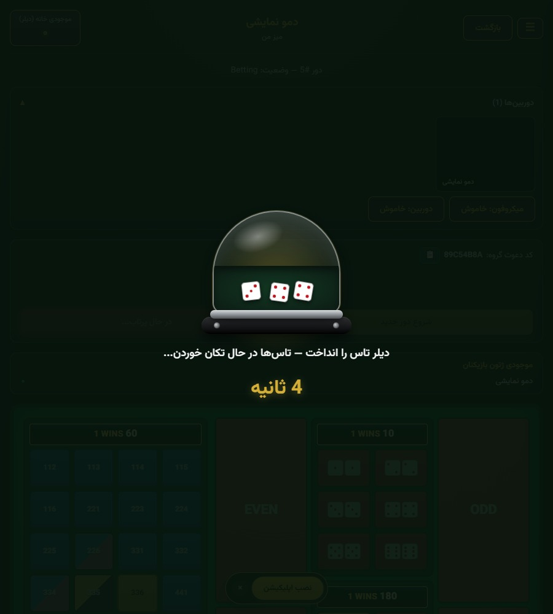
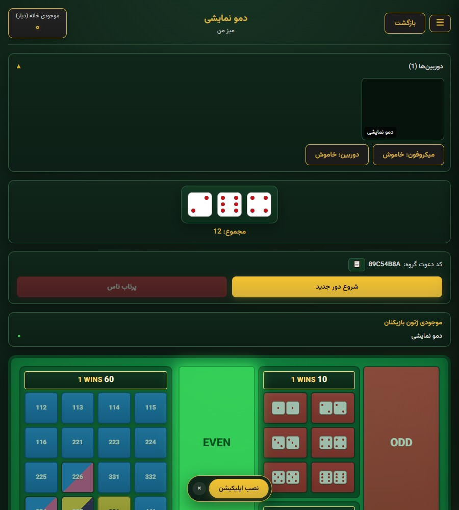
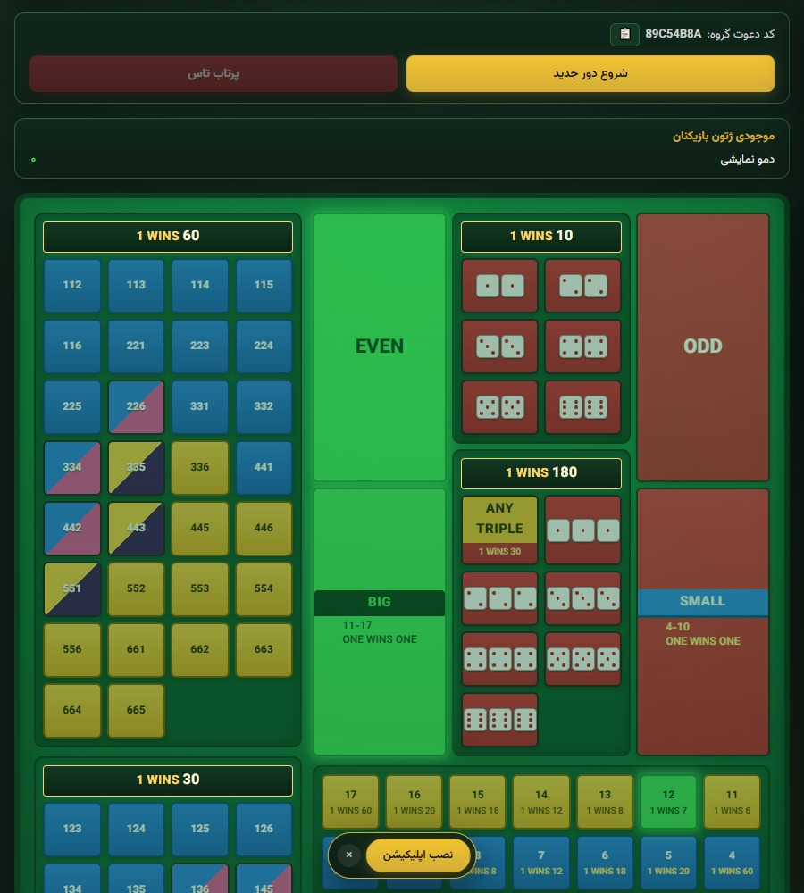

دربارهٔ این نمونهکار
- یک بازی کازینویی زنده و چندنفره با تاس، شرطبندی لحظهای و اعلام نتیجه بهصورت آنی برای همهٔ بازیکنان میز.
- ارتباط زنده بین دیلر و بازیکنان با تصویر و صدا (LiveKit)، همزمان با هماهنگی وضعیت بازی از طریق SignalR.
- حساب کاربری صرفاً از طریق ربات تلگرام ساخته میشود؛ بدون فرم ثبتنام عمومی در وب.
- سیستم ژتون امتیازی داخلی — هیچ اتصال یا تراکنش پول واقعی در بازی وجود ندارد.
- پنل مدیریت کامل برای مدیریت بازیکنان، میزها و طرحهای اشتراک.

صفحهٔ ورود
طراحی تیره و مینیمال هماهنگ با فضای کازینویی بازی. حساب کاربری فقط از طریق ربات تلگرام ساخته میشود و نامکاربری/رمز عبور بهصورت خودکار برای کاربر ارسال میشود.

مدیریت میزها
هر بازیکن میتواند نقش دیلر بگیرد و میز خودش را با نام، حداقل/حداکثر ژتون و زمان شرطبندی دلخواه بسازد؛ یا با کد دعوت به میز بازیکن دیگری بپیوندد.

میز زنده با تصویر دیلر
پنل دوربین و میکروفون دیلر بهصورت زنده در بالای میز نمایش داده میشود. تایمر شمارش معکوس، مدتزمان باقیماندهٔ شرطبندی هر دور را به همهٔ اعضای میز نشان میدهد.

انیمیشن لحظهٔ پرتاب
پس از پایان زمان شرطبندی، دیلر تاسها را میاندازد و یک انیمیشن سهبعدیِ تکانخوردن تاس داخل کاسه، پیش از اعلام نتیجهٔ نهایی برای همهٔ بازیکنان پخش میشود.

اعلام نتیجه و برد لحظهای
مجموع تاسها (در این مثال ۱۲) بلافاصله محاسبه و نمایش داده میشود و میدانهای برندهٔ جدول شرطبندی — مثل EVEN و BIG — بهرنگ سبز روشن میشوند.

جدول کامل شرطها
تمام حالتهای استاندارد شرطبندی سیکبو — ترکیبهای سهتایی، جفتهای خاص، مجموع دقیق و نسبتهای برد هرکدام — در یک چیدمان شفاف و واضح در دسترس بازیکن است.